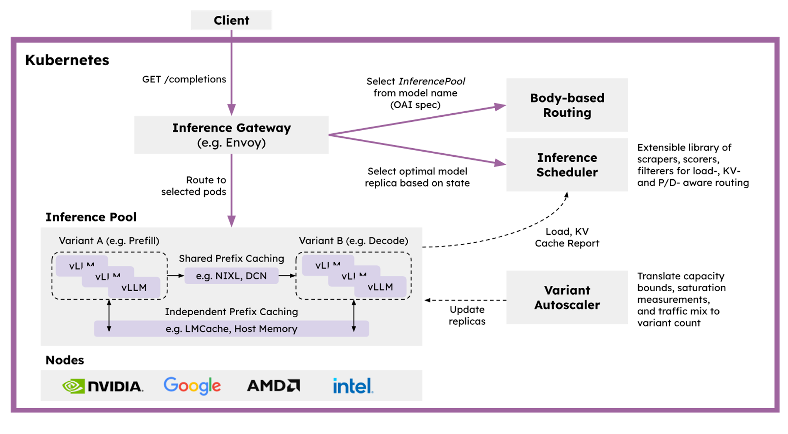

LLM-D Architecture
|
The Three Layers of Power
LLM-D isn’t magic; it’s just brilliant engineering. The architecture is a clean, three-tiered system designed for performance and control. |

|
The Three Layers of Power
LLM-D isn’t magic; it’s just brilliant engineering. The architecture is a clean, three-tiered system designed for performance and control. |